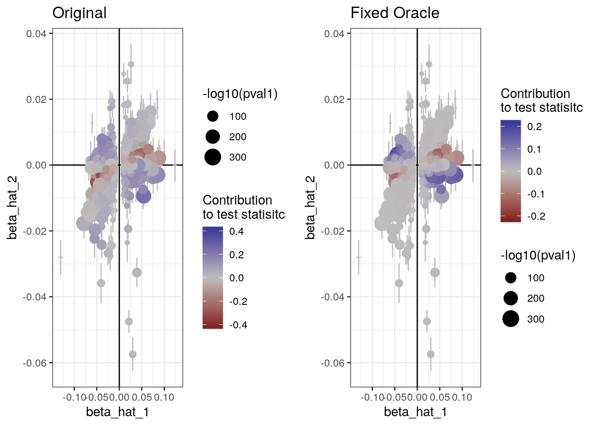
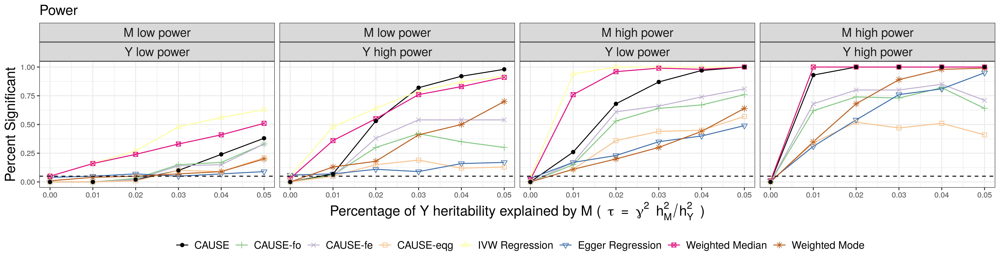
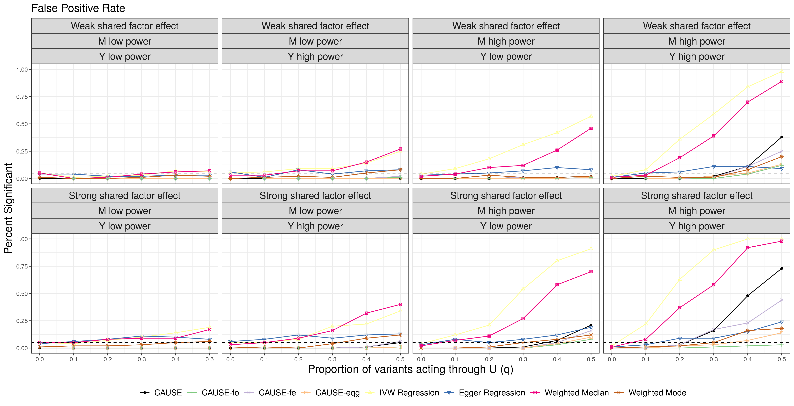

Last updated: 2019-12-13
Checks: 7 0
Knit directory: cause/
This reproducible R Markdown analysis was created with workflowr (version 1.4.0.9000). The Checks tab describes the reproducibility checks that were applied when the results were created. The Past versions tab lists the development history.
Great! Since the R Markdown file has been committed to the Git repository, you know the exact version of the code that produced these results.
Great job! The global environment was empty. Objects defined in the global environment can affect the analysis in your R Markdown file in unknown ways. For reproduciblity it’s best to always run the code in an empty environment.
The command set.seed(20181014) was run prior to running the code in the R Markdown file. Setting a seed ensures that any results that rely on randomness, e.g. subsampling or permutations, are reproducible.
Great job! Recording the operating system, R version, and package versions is critical for reproducibility.
Nice! There were no cached chunks for this analysis, so you can be confident that you successfully produced the results during this run.
Great job! Using relative paths to the files within your workflowr project makes it easier to run your code on other machines.
Great! You are using Git for version control. Tracking code development and connecting the code version to the results is critical for reproducibility. The version displayed above was the version of the Git repository at the time these results were generated.
Note that you need to be careful to ensure that all relevant files for the analysis have been committed to Git prior to generating the results (you can use wflow_publish or wflow_git_commit). workflowr only checks the R Markdown file, but you know if there are other scripts or data files that it depends on. Below is the status of the Git repository when the results were generated:
Ignored files:
Ignored: .Rhistory
Ignored: .Rproj.user/
Ignored: sim_results/
Ignored: src/RcppExports.o
Ignored: src/cause.so
Ignored: src/log_likelihood_functions.o
Untracked files:
Untracked: analysis/figure/ldl_cad.Rmd/
Untracked: analysis/figure/little_test.Rmd/
Untracked: analysis/ldl_cad_future.Rmd
Untracked: cause.Rcheck/
Untracked: docs/cause.bib
Untracked: docs/figure/cause_figure_1_standalone.pdf
Untracked: gwas_data/
Untracked: ll_v7_notes.Rmd
Untracked: man/est_cause_params_future2.Rd
Untracked: temp.txt
Untracked: tests/
Untracked: upd_grid_test/
Untracked: upd_mixsqp_test/
Unstaged changes:
Modified: example_data/LDL_CAD_merged.RDS
Note that any generated files, e.g. HTML, png, CSS, etc., are not included in this status report because it is ok for generated content to have uncommitted changes.
These are the previous versions of the R Markdown and HTML files. If you’ve configured a remote Git repository (see ?wflow_git_remote), click on the hyperlinks in the table below to view them.
| File | Version | Author | Date | Message |
|---|---|---|---|---|
| Rmd | 9a53264 | Jean Morrison | 2019-12-13 | wflow_publish(“analysis/grid_estimation.Rmd”) |
These experiments came about in the course of looking at the behavior of CAUSE for very high sample size. The question I set out with was, when \(q\) is large (say 0.4) and \(\gamma = 0\), will CAUSE eventually be able to distinguish this from a causal scenario if the signal is strong enough? We would hope this would be the case. In the results we present in the paper, the highest sample size we use is 40,000 for each trait (this is the high power \(M\)/high power \(Y\) condition) and the false positive rate is pretty large for larger values of \(q\).
I started turning the sample size up to see what would happen. I looked at sizes of \(10^5\), \(10^6\) and \(10^8\). At \(10^8\) CAUSE was able to correctly estimate all the parameters and reject the causal model. However, at \(10^6\) it was still getting false positives. When I visually inspected the data produced with the \(10^6\) sample size, the signal looked clear to me and I thought that CAUSE should be doing a better job. This lead me to wonder if the prior distribution we estimate for SNP effects was too wide, making it hard to distinguish models.
Briefly stated, the CAUSE model for summary statistics is
\[ \begin{pmatrix} \hat{\beta}_{M,j}\\ \hat{\beta}_{Y,j} \end{pmatrix} \sim N\left(\begin{pmatrix} \beta_{M,j}\ \\ \beta_{Y,j} \end{pmatrix}, \begin{pmatrix} s_{M,j}^2 & \rho s_{M,j} s_{Y,j} \\ \rho s_{M,j}s_{Y,j} & s_{Y,j}^2 \end{pmatrix}\right) \] \[ \beta_{Y,j} = \gamma \beta_{M,j} + \eta Z_j \beta_{M,j} + \theta_j \] \[ Z_j \sim Binom(q) \] \[ \begin{pmatrix} \beta_{M,j}\\ \theta_j \end{pmatrix} \sim \sum_{k=0}^{K} \pi_k N\left(\begin{pmatrix}0 \\0 \end{pmatrix}, \begin{pmatrix} t_{k,1}^2 & 0 \\ 0 & t_{k,2}^2 \end{pmatrix}\right) \] We assume the pairs \((t_{k,1}, t_{k,2})\) are fixed in advanced (referred to as “the grid” or “variance pair candidates”). The CAUSE model has the following unknown parameters: \(\gamma\), \(\eta\), \(q\), \(\rho\), and \(\pi\). The first four are all scalars and \(\pi \in \mathbb{R}^{K+1}\) and deterimines the distribution of SNP effects.
In our current method of estimation, we estimate \(\pi\) and \(\rho\) first and fix these and then compute posterior distributions for \(\gamma\), \(\eta\), and \(q\). This estimation step is what I am investigating here. In what I will call “the original” estimation scheme, \(\pi\) and \(\rho\) are obtained by maximizing the likelihood with \(\gamma\), \(\eta\), and \(q\) all fixed at zero. One consequence of this is that, if \(\gamma\), \(\eta\), and \(q\) are not all zero, more weight will be given to larger variances than is necessary. In this document I will discuss these alternatives:
\(\rightarrow\) \(\rightarrow\) The investigation came about because I discovered that using a scheme similar to eqg, I could almost entirely avoid false positives with large \(q\) at lower sample sizes. However (spoiler) this method also lead to much lower power and therefore wasn’t acceptable. To understand why, I then implemented the fixed oracle and fixed est methods. I found that these also had low power which surprised me, especially for fixed oracle which I would expect to do well.
To understand the effect of the fixed oracle parameters I will go through a few examples.
res_orig <- readRDS("upd_grid_test/high_sample_q0.5__res_orig.rds")
summary(res_orig)p-value testing that causal model is a better fit: 0.0096
Posterior medians and 95 % credible intervals:
model gamma eta
[1,] "Sharing" NA "0.15 (0.12, 0.17)"
[2,] "Causal" "0.11 (0.08, 0.13)" "0.02 (-0.15, 0.17)"
q
[1,] "0.71 (0.59, 0.83)"
[2,] "0.06 (0, 0.33)" res_fo <- readRDS("upd_grid_test/high_sample_q0.5___res_fo.rds")
summary(res_fo)p-value testing that causal model is a better fit: 0.69
Posterior medians and 95 % credible intervals:
model gamma eta q
[1,] "Sharing" NA "0.22 (0.21, 0.23)" "0.5 (0.46, 0.54)"
[2,] "Causal" "0.01 (0, 0.23)" "0.2 (-0.22, 0.22)" "0.49 (0.45, 0.54)"Using the original parameters we are getting a false positive. In the causal model we are estimating a causal effect that is between the true confounder effect (0.22) and 0. The sharing model is also not quite accurate, the proportion \(q\) is too large, it is also trying to fit this comporomise causal model. Using the “oracle” grid we get the correct estimates from both models and no false positive. We can compare the ELPD contributions.

As we might expect form the examples above, in simulations, fixed oracle parameters almost entirely eliminate false positives. However, the power is significantly reduced. What can we do to retain power but still eliminate false positives and get good parameter estimates? Note that the fixed estimate parameters (“CAUSE-fe”) are also included in these plots. The fixed oracle are “CAUSE-fo”. I haven’t discussed these but the perform fairly simiarly to the oracle estimates but don’t control the false positive rate quite as well. I got somewhat better false positive results from the eqg method which also has much worse power.


sessionInfo()R version 3.6.1 (2019-07-05)
Platform: x86_64-pc-linux-gnu (64-bit)
Running under: Ubuntu 18.04.3 LTS
Matrix products: default
BLAS: /usr/lib/x86_64-linux-gnu/openblas/libblas.so.3
LAPACK: /usr/lib/x86_64-linux-gnu/libopenblasp-r0.2.20.so
locale:
[1] LC_CTYPE=en_US.UTF-8 LC_NUMERIC=C
[3] LC_TIME=en_US.UTF-8 LC_COLLATE=en_US.UTF-8
[5] LC_MONETARY=en_US.UTF-8 LC_MESSAGES=en_US.UTF-8
[7] LC_PAPER=en_US.UTF-8 LC_NAME=C
[9] LC_ADDRESS=C LC_TELEPHONE=C
[11] LC_MEASUREMENT=en_US.UTF-8 LC_IDENTIFICATION=C
attached base packages:
[1] stats graphics grDevices utils datasets methods base
other attached packages:
[1] gridExtra_2.3 forcats_0.4.0 stringr_1.4.0 dplyr_0.8.3
[5] purrr_0.3.3 readr_1.3.1 tidyr_1.0.0 tibble_2.1.3
[9] ggplot2_3.2.1 tidyverse_1.2.1 cause_0.3.0.0235
loaded via a namespace (and not attached):
[1] httr_1.4.1 jsonlite_1.6 foreach_1.4.7
[4] modelr_0.1.5 RcppParallel_4.4.4 assertthat_0.2.1
[7] mixsqp_0.1-97 cellranger_1.1.0 yaml_2.2.0
[10] numDeriv_2016.8-1.1 pillar_1.4.2 backports_1.1.5
[13] lattice_0.20-38 glue_1.3.1 digest_0.6.23
[16] rvest_0.3.4 colorspace_1.4-1 htmltools_0.3.6
[19] Matrix_1.2-17 pkgconfig_2.0.3 broom_0.5.2
[22] haven_2.1.1 scales_1.1.0 intervals_0.15.1
[25] whisker_0.4 git2r_0.26.1 generics_0.0.2
[28] farver_2.0.1 withr_2.1.2 ashr_2.2-32
[31] lazyeval_0.2.2 cli_2.0.0 magrittr_1.5
[34] crayon_1.3.4 readxl_1.3.1 evaluate_0.14
[37] fs_1.3.1 fansi_0.4.0 doParallel_1.0.15
[40] nlme_3.1-141 MASS_7.3-51.4 xml2_1.2.2
[43] truncnorm_1.0-8 tools_3.6.1 loo_2.1.0
[46] hms_0.5.2 lifecycle_0.1.0 matrixStats_0.55.0
[49] munsell_0.5.0 compiler_3.6.1 rlang_0.4.2
[52] grid_3.6.1 iterators_1.0.12 rstudioapi_0.10
[55] labeling_0.3 rmarkdown_1.15 gtable_0.3.0
[58] codetools_0.2-16 R6_2.4.1 lubridate_1.7.4
[61] knitr_1.24 zeallot_0.1.0 workflowr_1.4.0.9000
[64] rprojroot_1.3-2 stringi_1.4.3 pscl_1.5.2
[67] parallel_3.6.1 SQUAREM_2017.10-1 Rcpp_1.0.3
[70] vctrs_0.2.0 tidyselect_0.2.5 xfun_0.9